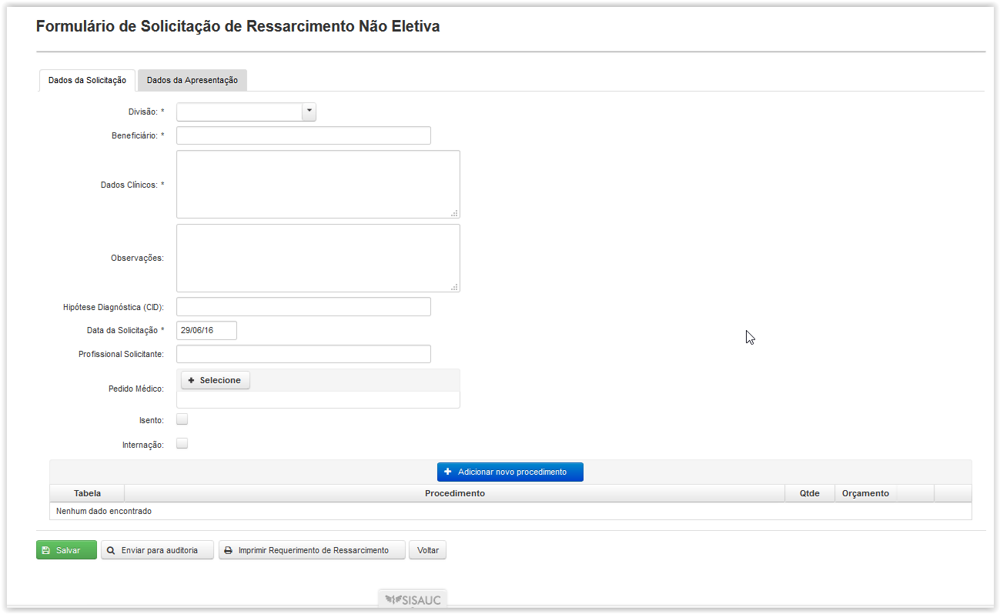
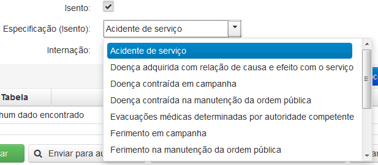
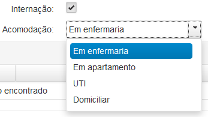
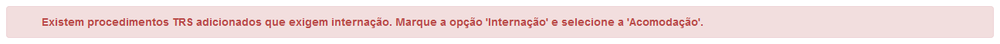
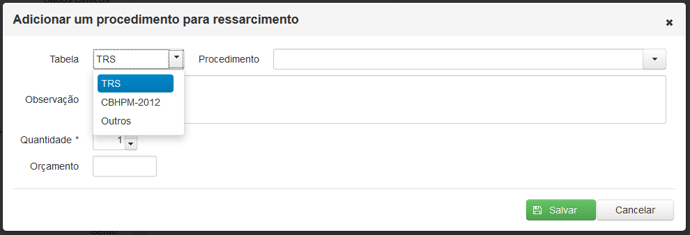
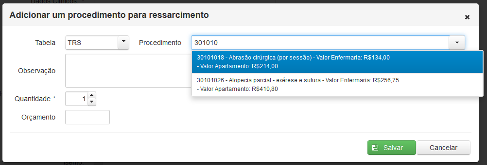
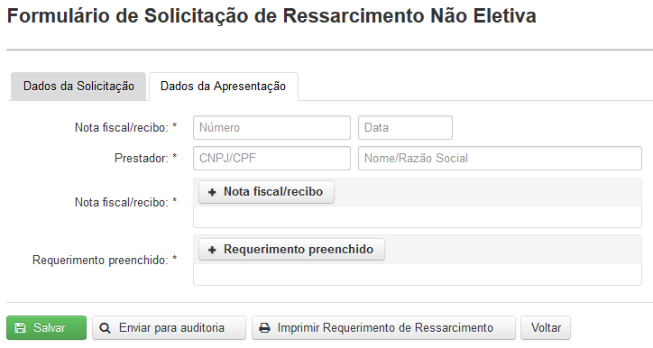
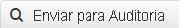

Tela "Formulário de Solicitação de Ressarcimento Não Eletiva"
O campo beneficiário permite a busca do beneficiário pelo nome ou SARAM do titular.
O campo 'Dados Clínicos' permite descrição completa do quadro do paciente.
O campo 'Observações' permite que seja inserida alguma informação pertinente que não possa ser escrita nos 'Dados clínicos' e a sinalização da 'urgência' deverá ser criteriosa.
O campo 'Hipótese Diagnóstica (CID)', apesar de não obrigatório, permite maiores dados para a análise da solicitação e codifica a patologia suspeita através do código da Classificação Internacional de Doenças mais atualizada (CID 10).
Na solicitação de Ressarcimento Não Eletiva o pedido médico não é obrigatório.
A opção isento ao ser selecionada oferece uma lista com as especificações da isenção.

Especificação de isenção
Além disto, permite a informação da necessidade de Internação Hospitalar para realização do procedimento.
Se confirmada a necessidade de Internação, surgirão quatro opções de Acomodação a serem escolhidas conforme previsto em regulamento da SARAM: Apartamento,Enfermaria,UTI e Domiciliar.

Opções de acomodação

Caso o procedimento TRS necessite de internação a opção internação torna-se obrigatória
O botão( ) abre a tela 'Adicionar um procedimento para ressarcimento' onde é necessário escolher uma tabela antes de adicionar o procedimento.
) abre a tela 'Adicionar um procedimento para ressarcimento' onde é necessário escolher uma tabela antes de adicionar o procedimento.

Tela 'Adicionar um procedimento para ressarcimento - Selecionando a tabela'

Adicionando procedimento da tabela TRS

Aba Dados da Solicitação presente na solicitação de ressarcimento não eletiva
Caso o usuário selecione "TRS" no campo "Tabela e em seguida selecione um procedimento odontológico no campo "Procedimento" da popup "Adicionar um procedimento para Ressarcimento" serão abertos os campos "Face" e "Dente", informações estas, necessárias aos procedimentos seguintes de auditoria, coforme imagens abaixo:


Após o correto preenchimento do Formulário de Solicitação o Atendente do FUNSA enviará o pedido para a Auditoria Prospectiva que procederá à análise técnica, clicando no botão().
É possível também salvar uma solicitação para ser enviada mais tarde para a auditoria através do botão ( ).
).